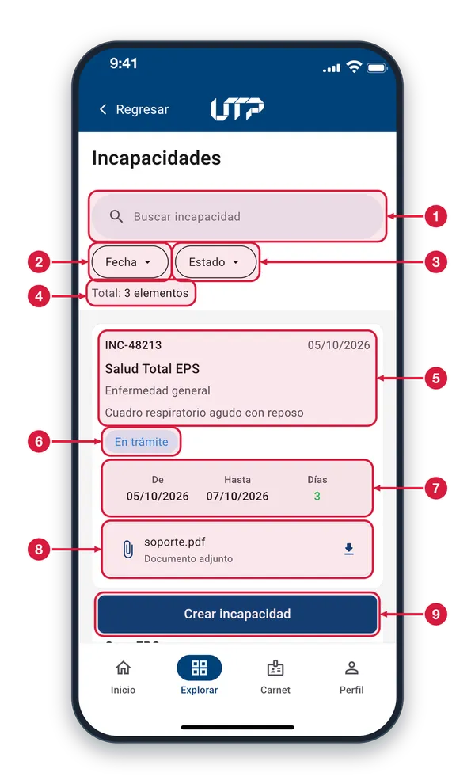
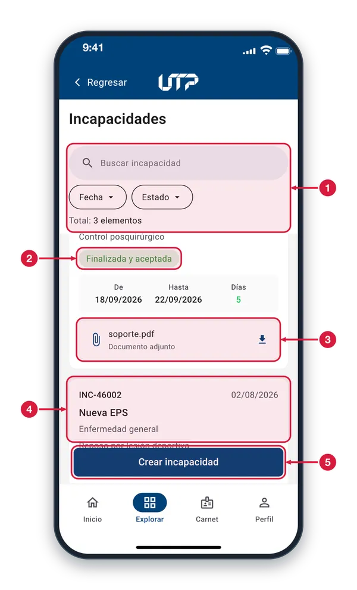
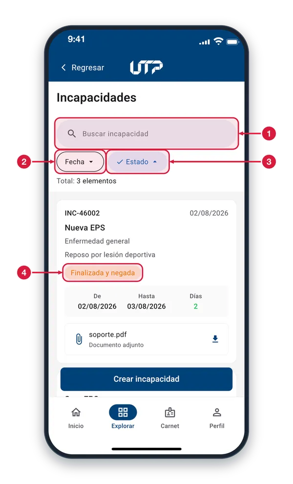
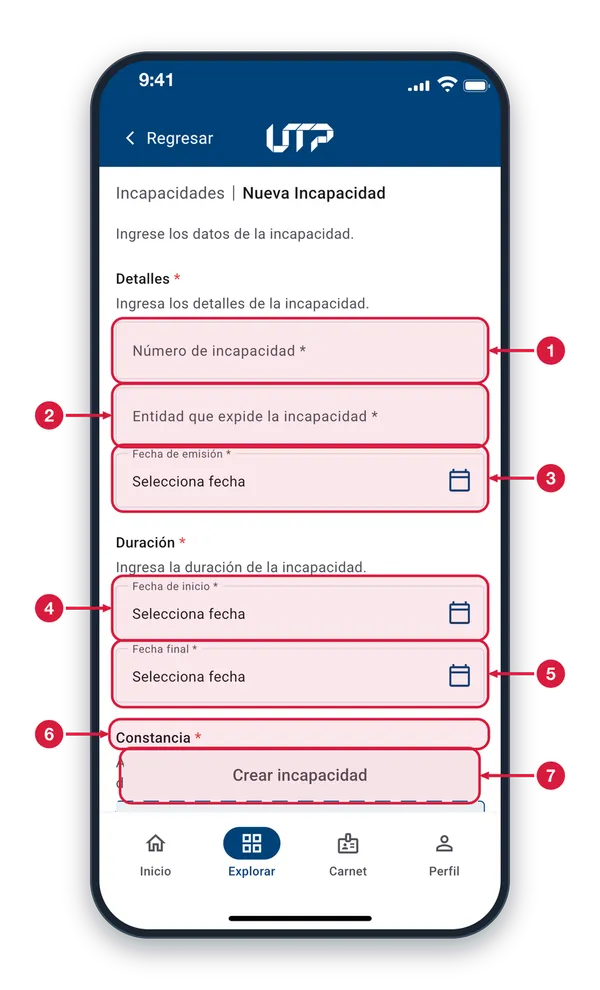
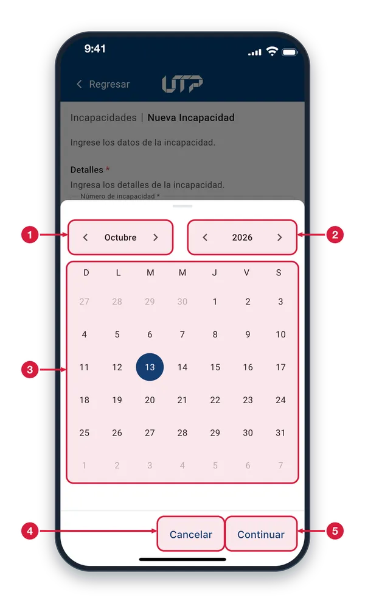
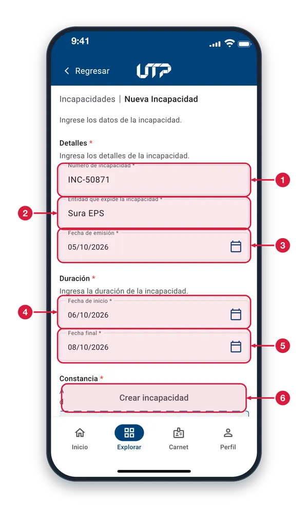
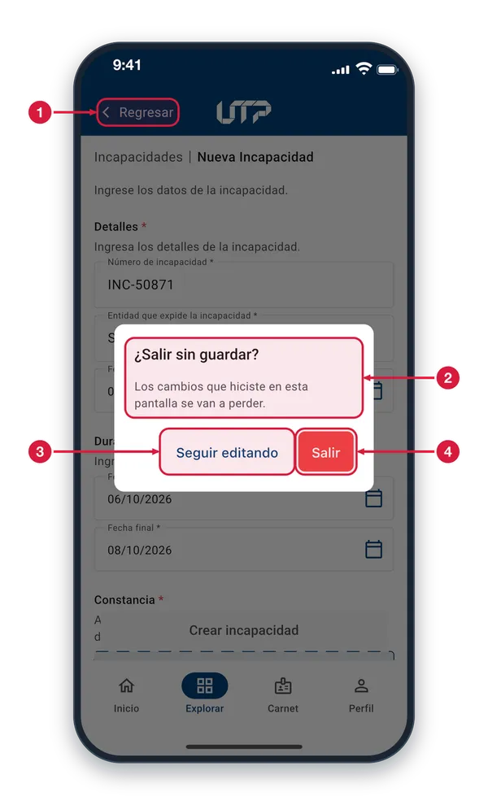

Registra y consulta tus incapacidades desde tu celular, de forma completamente digital: ya no necesitas desplazarte a la universidad para radicarlas.
El módulo de Incapacidades cuenta con:
Lista completa de todas tus incapacidades
Registra nuevas incapacidades con soporte adjunto
Consulta el estado de cada solicitud
Filtros por fecha y estado para encontrar rápido
Búsqueda por texto en la lista
Solo podrás ver y hacer uso del módulo INCAPACIDADES cuando te loguees en la aplicación
INCAPACIDADES MÉDICAS · TUS SOLICITUDES
Lista de incapacidades1 de 3
Consulta las incapacidades que has radicado y crea una nueva sin ir a la universidad. Entras desde Explorar.

Buscar incapacidad Escribe parte del número, de la entidad o de la contingencia para filtrar la lista. No importan las tildes ni las mayúsculas.
Ordenar por fecha Ordena por la fecha de creación que muestra cada tarjeta, empezando por la más reciente. Tócalo otra vez para invertir el orden.
Ordenar por estado Agrupa las incapacidades según su estado. Tócalo otra vez para invertir el orden. El chip activo se resalta con un check.
Total Cuántas incapacidades tienes registradas. El número no cambia cuando buscas.
Datos de la incapacidad Arriba, el número y la fecha en que se creó la solicitud. Debajo, la entidad que la expidió, la contingencia y la descripción del caso.
Estado de la solicitud Etiqueta de color. En trámite (azul) significa que tu solicitud sigue en revisión. Los demás estados aparecen en las otras tarjetas.
Duración De: primer día de la incapacidad. Hasta: último día. Días: cuántos días dura en total.
Soporte adjunto Es el archivo que subiste como constancia. Tócalo para descargarlo y abrirlo en otra aplicación del teléfono; si falla, verás un aviso.
Crear incapacidad Siempre está visible. Tócalo para abrir «Nueva Incapacidad», el formulario para radicar una incapacidad; al volver, la lista se actualiza.
Estados de una incapacidad2 de 3
Al bajar por la lista ves otras tarjetas, cada una con su estado. El encabezado y el botón se quedan fijos.

Encabezado fijo El buscador, los chips de orden y el total no se mueven cuando bajas, así que puedes buscar u ordenar en cualquier momento.
Estado de la solicitud Finalizada y aceptada (verde): ya se revisó y fue aceptada. En trámite (azul): sigue en revisión. Finalizada y negada (naranja): se revisó y no fue aceptada.
Soporte adjunto Cada tarjeta que tiene archivo lo muestra aquí. Tócalo para descargarlo y abrirlo.
Otra incapacidad Cada incapacidad lleva su propio estado. También verás Cancelada y Anulada (la solicitud ya no sigue su trámite) y Borrador (guardada sin terminar de enviar).
Crear incapacidad El botón queda sobre la lista mientras te desplazas. Tócalo cuando quieras radicar una nueva incapacidad.
Lista ordenada por estado3 de 3
Al tocar «Estado», la lista se reordena según el estado de cada incapacidad. Vuelve a tocarlo para invertir el orden.

Buscador Puedes seguir buscando mientras la lista está ordenada: se filtran las tarjetas y se mantiene el orden elegido.
Chip Fecha Si lo tocas, la lista pasa a ordenarse por fecha y el chip Estado se apaga: solo hay un orden activo a la vez.
Chip Estado activo Resaltado con un check y color azul cuando la lista está ordenada por estado. Tócalo otra vez para invertir el orden de las tarjetas.
Estado en cada tarjeta Las tarjetas con el mismo estado quedan juntas. Finalizada y negada (naranja): la solicitud ya se revisó y no fue aceptada.
Nueva incapacidad
Completa el formulario paso a paso para radicar tu incapacidad médica.
Datos que debes completar:
Detalles: número de la incapacidad, entidad que la expide y fecha de emisión
Duración: fecha de inicio y fecha final
Constancia: adjunta el soporte en PDF, JPG o PNG de hasta 8 MB
Toca «Crear incapacidad» para radicarla
Solo podrás ver y hacer uso del módulo INCAPACIDADES cuando te loguees en la aplicación
NUEVA INCAPACIDAD
Nueva incapacidad1 de 4
Aquí radicas una incapacidad: llenas los datos, subes el soporte y la registras. Entras con «Crear incapacidad» de la lista.

Número de incapacidad Escribe el número de la incapacidad tal como aparece en el documento. Los campos con asterisco (*) son obligatorios.
Entidad que expide Escribe el nombre de la entidad que expidió la incapacidad.
Fecha de emisión Toca el campo para abrir el calendario y elegir el día en que se expidió la incapacidad.
Fecha de inicio Elige con el calendario el primer día de la incapacidad. No puede ser posterior a la fecha final.
Fecha final Elige con el calendario el último día de la incapacidad. No puede ser anterior a la fecha de inicio.
Constancia Desplázate hacia abajo: en la zona punteada adjuntas el soporte (PDF, JPG o PNG de hasta 8 MB). En iPhone eliges entre Fotos y Archivos.
Crear incapacidad Está apagado mientras falte algo: datos, fechas, constancia o el reporte del caso (contingencia, diagnóstico y descripción). Al completar todo se activa y registras la incapacidad.
Elegir una fecha2 de 4
Aparece al tocar un campo de fecha (emisión, inicio o final): eliges el día en un calendario y lo confirmas.

Mes Con las flechas cambias de mes; en el centro se lee el mes que estás viendo.
Año Con las flechas cambias de año. Solo se pueden elegir fechas hasta cinco años antes o después del año actual.
Días del mes Toca el día que quieres. El círculo azul marca el día elegido (al abrir, hoy o la fecha que ya habías puesto). Los días grises son de otros meses.
Cancelar Cierra el calendario sin cambiar la fecha del campo.
Continuar Guarda el día marcado en el campo y cierra el calendario. Si el inicio queda después del final (o al revés), verás un aviso y el campo queda vacío.
Formulario diligenciado3 de 4
Así se ve el formulario con los datos y las fechas ya escritos; «Crear incapacidad» sigue apagado hasta completar todo.

Número escrito Aquí queda el número que escribiste. Toca el campo si necesitas corregirlo antes de registrar.
Entidad escrita Aquí queda la entidad que expidió la incapacidad. También puedes tocarla para corregirla.
Fecha de emisión elegida La fecha se muestra con el formato día/mes/año. Tócala si quieres elegir otra.
Fecha de inicio elegida No puede quedar después de la fecha final: si ocurre, verás un aviso y tendrás que elegirla otra vez.
Fecha final elegida No puede quedar antes de la fecha de inicio: si ocurre, verás un aviso y tendrás que elegirla otra vez.
Crear incapacidad Sigue apagado porque aún falta algo. Se activa cuando adjuntas la constancia y completas el reporte del caso: contingencia, diagnóstico y descripción.
¿Salir sin guardar?4 de 4
Aparece si tocas «Regresar» después de escribir datos en el formulario y todavía no has creado la incapacidad.

Regresar Con datos escritos, la app pregunta antes de salir para que no pierdas lo que llenaste. Si no hay datos, sales sin preguntar.
Aviso Te recuerda que los cambios hechos en esta pantalla se van a perder si sales. Elige una de las dos opciones.
Seguir editando Cierra el aviso y vuelves al formulario con todo lo que escribiste. Tocar fuera del aviso hace lo mismo.
Salir Sales del formulario y se pierden los datos escritos; vuelves a la lista de incapacidades. La incapacidad no se crea.